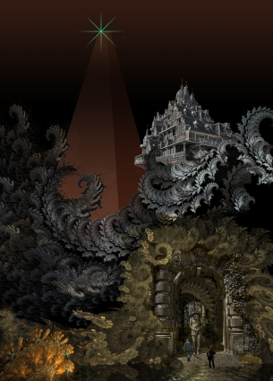

The Voice of the Lacuna
by
Gerard Houarner
Vinya stood before the avatarist, echoes filling the space where she’d expected him to answer. In these abandoned lower levels of the Last Redoubt, echoes always haunted the halls. Ancient machinery crumbled, lost souls wandered, manifestations grew out of the refuse left behind by a dwindling humanity. Something was always making a sound. The vast emptiness carried any noise far, like a signal from the lost souls or a cry from a Watcher hungry to connect with the living. The human.
The echoes made Vinya shiver. She asked the avatarist again, "Will you make the lacuna?"
At last the old man stirred. Cables and instruments shifted, a screen flickered, whispers rose from speaker before the avatarist turned down the power and fixed her with his human eye, and the mechanical one. "It is against the Law."
"I didn’t realized the Law was so strong down here," she said. A woman’s voice cried out from nearby. Another refugee, searching for her true love. By her voice, Vinya thought the woman had a long way to go before reuniting with the one she needed.
"There are things done that bring Watchmen down. We don’t need their kind here. Let them stay in their cities, wander their lonely tower, keep us safe until the end. Go away."
"I dreamed he was alive," she said, coming closer. He was too old to be swayed by the curves her shift traced over her body, by the flash of skin, the dance of hair, the scent of her sex. He was the wrong one, anyway. She only wanted him to hear, clearly, what she was saying.
"Are you one of those, then?" he asked, tapping at dead keys.
"He still walks the Night Lands — alive, human. I must go to him, bring him back."
"Do you hear him now?"
"No. He lives in my dreams. Or in the quiet moments of my hunger."
The atavarist closed his human eye. "What does he say to you?"
Vinya swayed with the memory of her communion with her other half. "He tells me how he will take care of me. Touches my mind as he would my body. Makes me feel. When was the last time you felt anything?"
"Are these your dreams, or his?"
"Ours. You don’t feel anything, anymore, do you."
"Does this man have a name?"
"His name doesn’t matter. I remember all his names, over all time. What matters is that I know him. He is out there. I have to go to him, and bring him back."
The atavarist opened his human eye and fixed her with its coldness. "Women do not walk the Night Lands. The law and the histories say so, and please, do not tell me of Mirdath. We have heard quite enough of her over the ages."
"It is my right to seek him out," Vinya said. "We belong to each other. What else is there is this world, except belonging to one another?"
The light in the old man’s mechanical eye went out, and only the true one shined in the cluttered chamber that was the atavarist’s home. Nearby, the woman wept. Dust drifted through the air, giving it the taste of ashes. "I wouldn’t know about any of that," he said.
"He doesn’t either," Vinya said, stepping back. "I remember always, the past, what will come, how we will end together, and begin. That is my Gift."
"I think you have others."
"Yes."
"Are you human?" the atavarist asked. His fingers stopped moving, and gears clicked, motors whined, behind Vinya. Bitter smoke tainted the air as power charged timeless circuitry with death.
She sent the Master-Word from her mind to his, and spoke it loud enough to silence the manifestations and nightmares lurking in the shadows outside, and wherever her voice might carry. The atavarist nodded his hairless head. A plug popped out from a node above his ear.
"I am human," she said. "But I was born for more than this."
"We are born to live in the Last Redoubt, and to die here. There isn’t any more. So the Law says, so the histories tell us, so do the dreams reveal."
"I don’t care. My heart tells me other things. My love is lost in the Night Lands, and I must bring him back. If you will not stand in the way of Law and history, how can you stand against one who remembers who she must be with? Is our union not part of a greater Law?"
The atavarist waved a skeletal hand, shook his head. Spittle dribbled from the corner of his blackened lips. "You ask for a toy."
"I’m not asking for an avatar so I can become someone I am not. I’m not trying to be Mirdath, or one of the great Master Monstruwacans, or a Space-Faring Captain. I want a lacuna."
"They are for the young, so they can be imprinted with the child-like emotions and reactions of their human owners, and provide companionship before time and wisdom crush joy. They are for men who must tinker with problems like the Earth-Current, who seek to slip through a crack in the inevitable wall that waits for us at the end of our time, because these men must leave behind a record of what they thought and felt and discovered, as if any of that mattered. The lacuna are simple, empty things, for simple, empty people. Yet you say you have a Gift. More than one. Why waste my effort and yours on a piece of nothingness?"
"I will need a companion to go into the Night Lands. I will go with the lacuna."
The old man laughed. His external skeleton of instruments, monitors and mechanisms rattled, while internal bones and ligaments stiff with disuse cracked. In the far corners of his chamber, metal moaned, rasped. Blue lights flickered throughout the chamber, revealing in flashes arrays of arcane machinery that might have been scavenged from every corner of the Redoubt, perhaps even stolen from the Museum, or resurrected from the past. The surroundings quieted when he stopped. "Why an empty vessel?" he asked, at last. "Do you think such a thing will protect you?" His smile trembled with the effort to contain more laughter. A tear ran down his cheek.
"Another Gift tells me this is what I need to reach my love."
"Dreams of past and future won’t help you last more than a minute outside."
"What will you take for the lacuna?"
The avatarist called out in a language of clicks, and a female figure came into the old man’s aura of light. She was shorter than Vinya, dressed in a loose one-piece body suit, in red. The color startled Vinya. Any color startled, outside of the most decadent cathedrals to momentary pleasures in the Last Redoubt’s more elevated cities.
"This one was returned," the old man said. "Found wanting. The circuits, you know, after so many millions of years, they fray, even those built by our finest engineers for our greatest machines. The parts were all in good working order when I pieced the thing together, but it refused to take on a personality. It is beyond repair."
"What will you take for it?"
The atavarist waved a hand. The lacuna stood next to Vinya. "Bring back a trophy. From the Night Lands. Perhaps the answer to a riddle: why did it take so long for your true love to call for you? Why did he have to lose himself in the Night Lands for you to hear him?"
"I will bring back my love."
The atavarist’s laughter followed Vinya as she led the lacuna away.
In this last age of the Redoubt, there were many ways out of the great pyramid. Vinya had watched the occasional suicides drift down from the cities and find them. Her own mother and father had found an egress, before they left her to go out into the Night Land. At least according to the nomads who raised her. Maybe they’d killed her parents, taken her to train as another pair of hands and eyes in their fight for survival. Her Gifts, of Remembrance, and of Perception of what came from the Night Land, gave her value to those kinds of humans. She’d left that false family behind a long time ago, many levels above.
Sometimes, growing up in the forgotten parts of the Redoubt, she wondered if she’d been born a manifestation of the Night Land.
She left, without tedious Preparation, the burden of accouterments designed to facilitate human survival beyond the Redoubt’s defenses, or the capsule of release for when those defenses failed. The Watchmen never detected her or the lacuna which shadowed her. Or if they did, they did not care. What tried to get in was much more important than those who wanted to leave.
"Welcome to our world," the lacuna said, as Vinya crossed the Electric Circle guarding the Great Redoubt and entered the unprotected Night Lands. The lacuna’s voice, unmodulated by emotion, was astonishing in the twilight air, a sepulchral sound threading distant laughter and faint wailing, an announcement of future death.
A giant waited for her on a rocky outcrop, attended by a dozen grey men twice as tall as any man she’d ever seen in the Redoubt. The giant made these grey men look like children.
Vinya braced for an attack, anticipating pain, but it did not come. The giant did not speak in her mind, but her Gifts detected a pathetically weak flow of thought from the creature to the lacuna. Too weak to communicate telepathically as a true human, too stupid to know human speech, the giant filled the lacuna’s empty mind and used its basic store of knowledge to communicate with her.
Histories never recorded such a thing.
Vinya’s excitement passed in an instant as she met the giant’s gaze and felt her vulnerability as deeply as any dream of her lost love.
"Will you kill me?" she asked.
"So soon? We’ve been waiting for you."
"You know me?"
"We dream our little dreams, as well, human. Work our wonders against your steel edifice. You are the fruit of seeds planted long ago."
Vinya shook her head. "Liar. You don’t have that kind of power."
"Not me. Not my companions," the giant said, waving a hand over the heads of its attendants. "But other things. Larger entities, which would break your little machine if they tried speaking through it."
"If you’re not going to kill me, or tell me the truth, then what do you want?"
"Nothing. I’m only here to welcome you. And invite you to take your place among us."
Vinya nearly laughed at the idea. "My place? Here?"
"We can love you as well as any in your pyramid."
"Only humans love. My love is in the Night Lands, true enough. But he does not belong to you."
"How can you know we cannot love until you feel our embrace?" The giant stood, and its attendants arranged themselves around her.
"I know from my dreams, and my heart. Those things you will not find in the lacuna. I will not join you. What else will you take to let me pass?"
"Teach us the Master-Word. Give us the mask of humanity."
Vinya spoke the word, and sent it into the Night Land minds, and laughed at their ignorance in opening themselves to her, and wondered at the Gift that allowed her to go so deep into the Night Land’s baser creatures. And then she huddled close to the lacuna, and long, until the machine had the illusion of its own life heat, as the giants and grey men slaughtered one another from the madness of humanity infecting them.
When the fighting was done and the way clear, Vinya looked over her shoulder at the Last Redoubt, and waved at the telescopes and microphones that might be trained on her. The Gate remained closed. No one came out to rescue or escort her, or investigate her power. She was beneath the notice of history.
Vinya set off in the direction of her dream.
Vinya’s Gifts guided her to what she could safely eat and drink, to places where she could sleep without disturbance. Her lost love came to her in dream, spoke to her across the Night Lands, begged for her to come to him. Her dream put her on the Road Where The Silent Ones Walk.
A Doorway in the Night opened, revealing the swirling otherness of a different world. Behind it, figures danced around the Giant’s Kiln, and things crawled out from the Giant’s Pit. The ground trembled slightly. A foul breath blew out of the dimensional portal.
"We know what is coming," said the lacuna. "Why fight? The histories are written, past and future. There are no good dreams. Only the nightmare of your extinction."
"Where do the nightmares come from?" Vinya asked, this time addressing the lacuna. She did not want to see too closely what lay on the other side of the Doorway. "Do they come from the future? Or from out here in the Night Lands? Or through Doorways opened to places without love or human souls?"
The lacuna did not answer. The Doorway closed.
Something peered at her from the headlands beyond the Giant’s Kilns.
The Silent One, shrouded in grey, fleeing the Place Where The Silent Ones Are Never, stopped as she passed it on the Road. The lacuna shuddered. Screamed. Vinya took the lacuna’s hand and pulled the machine away.
They passed the Watcher of the North-East, and the strange light from its crown washed over them. The lacuna turned to the entity’s shadowed face. Vinya felt only a crippling nausea, which consumed her dreams and pulled at the soul that made her human. She vomited all that she had eaten that day, and cold sweat chilled her to bone. She wanted to lay down on the Road, and rest, and never wake up but lose herself in dreams of a perfect love waiting for her.
But that love called to her, and she heard, and Vinya used all the strength of her Gifts and body and humanity to push the lacuna and force them both beyond the influence of the Watcher’s Crown.
Night-Hounds leapt over their heads and Dire Worms churned the earth at the Road’s edge. Whispers came, and screams. They passed broken armor, the husk of a half-buried air-ship, a weathered marker from a lost age when perhaps humans still used the Road. The lacuna wailed, and sometimes spoke as if ghosts possessed it. Vinya tried to answer questions about the Last Redoubt, but too often she had never heard of the cities the ghosts asked about. The people the ghosts searched for were beyond the reach of any of her Gifts and dreams. She was warned of pneumavores, and other things eager for her spirit.
She followed her dreams, the voice of her lover, her other half.
Vinya found him standing by the Road Where the Silent Ones Walk, staring up at the sky, the House of Silence at his back. His armor and helm were whole, though pitted and blackened. Dried matter clung to the diskos at his side. She heard him still calling to her, begging for her to come to him.
By the light from the House of Silence, the lacuna’s red body-suit was bright once more.
"What are you looking at?" Vinya asked.
"One day," the man said, faceplate still angled towards the darkness above them, "these monsters will walk across the surface of our old sun."
"I’m here," she said. "I’ve come for you." She wanted to take his hand, but his suit made him look too much like a Night Land creature.
"The lines of gravity waver up there," the man continued. "The neutrino shower abates. The howl of cosmic background radiation fades. The stars are darker, and farther apart. It’s colder. And more lonely." He looked to her, and asked, "Do you feel it?"
She reached for his helm, eager to remove it and see his whole face. He batted her hands away, raised the diskos to her. "Are you human?"
"Don’t you hear me in your mind?" she asked.
"Speak the Master-Word."
Thinking she had deeper psychic connections to the Night Land’s monsters than her own true love, she spoke. The man put the diskos away and removed the helm.
"I remember us," Vinya said, putting a hand to his cheek and gazing into his eyes. They were dark. He was beautiful. But the flesh did not matter. The soul the shell housed was all that was important. "We were one before this world was sundered, and we will be one when it ends. Make love to me here, now, on this Road our ancestors built, before this great House, which may break or grow dark in the face of a mystery these Night Lands can never understand about us."
The man took off his gloves, breastplate, boots and leggings. He stripped off the protective layers of clothing until he was naked. His scent, powerful from the days he’d spent locked in his armor, was strong. Something slithered through the brush.
He came up on the road. Vinya slipped out of her clothes. He walked towards her. She held her arms out. Shadows moved. She closed her eyes, skin tingling in anticipation of his touch. He moved through her mind, calling. She dreamed they were elsewhere, elsewhen.
The lacuna cried out.
Vinya opened her eyes. Turned. The man had taken the lacuna in his arms.
The machine put its hands on his head. Snapped his neck.
The man fell to the Road.
Vinya’s shadow was a dagger driven across the Road by the light from the House of Silence, into the lacuna.
She went to the man. His eyes were open, fixed on Vinya’s face as she knelt beside him. He seemed ready to draw breath again, making his last sigh sound like an illusion. His body was warm, except for the spot on his chest over his heart.
Vinya drew her hand back. His heart had been frozen. He’d been alive, but also dead, in the way of the Night Lands, as some histories of survivors had recounted. His soul was gone, had been gone for some time. For as long as she’d heard him calling to her. Vinya looked up to the lacuna, and suddenly knew the answer to the avatarist’s riddle.
Death had awakened the man’s soul. Dreams had caught his soul at the moment of his passing and brought his last thoughts, his first and final human realization, to Vinya. But he was gone, nestled in some other vessel, or even lost, like the ghosts who had inhabited the lacuna. She’d heard nothing more than echoes of his soul, surviving in the empty house of his flesh.
"Vinya," the lacuna called.
Vinya looked away. The House of Silence loomed, both far and near. Its bright, empty windows challenged the Night Lands’ creatures to extinguish their lights. But none ever did.
"Are you reborn already?" Vinya asked. "Have you come back for my love?" She could hear the avatarist’s laughter in her mind, as if telepathically projected. It was more dreadful to her than anything that ever came from the Night Lands.
"We all want to be reborn," the lacuna said. "We all want this love you squander in your fleshy cages."
"Liar. Are you machine, or spirit, or Night Land monster?" Vinya asked.
"Bring us the Master-Word," the lacuna said, coming closer.
"You will never understand it," she said. A dream of the future took her, and in it the Watchers came to bring down the Last Redoubt, and Abundant Terror seized the last of humanity, releasing all the souls that remained tethered to the Night Lands.
Vinya bent over the man’s body, removed the capsule of release from his flesh, swallowed it before the lacuna could stop her. The voice of the lacuna and its inhuman demands merged with a darkness so profound not even the lights from the House of Silence could break it. The hush that came over her was deeper than any found in the House, or in the Quiet City standing on the edge of the Black Mist, or in places above or below where not even the Night Lands held sway.
In that darkness and the silence, she flew from her body, racing after her perfect lover, and to the time when, beyond the dreaming and the flesh and the Night Lands, all who had ever been one and broken would once again be made whole.
© 2003 by Gerard Houarner.
Image copyright by Tais Teng.